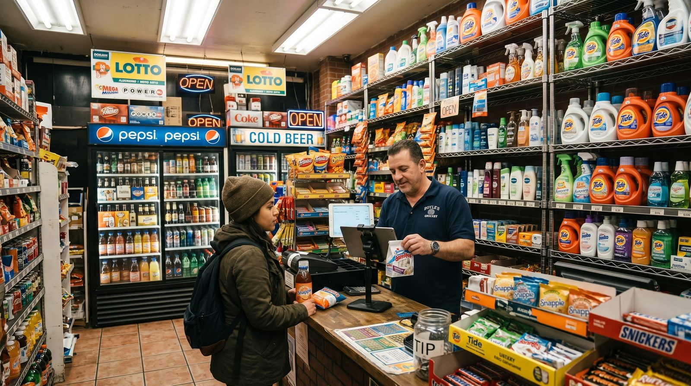

Best POS System for Small Business in 2026
Picking a point-of-sale system is one of the most expensive small decisions a shop or restaurant owner makes, because the wrong choice quietly costs you every single card sale. This guide walks you through how to choose, the features that actually matter, and the real monthly cost (including processing fees) of the providers everyone recommends. No hype, just the numbers and the trade-offs.

What a POS really does in 2026
A modern point-of-sale system is no longer just a cash drawer with a screen. It rings up sales, prints or emails receipts, tracks what you sell, manages staff and shifts, and feeds you reports you can actually act on. Most run in the cloud on a tablet or phone, sync to a dashboard you can open from home, and connect to a card reader.
That shift matters because the POS now sits at the centre of your business: it touches payments, inventory, customers and accounting at once. So the question isn't only "which app looks nice", it's "which system fits how I sell, and what will it really cost me over a year?"
How to choose: a 6-point checklist
Before you compare brands, get clear on what you need. Run through these six questions and write down your answers, they'll narrow a crowded field fast.
1. What do you sell, and how?
A clothing boutique, a coffee bar and a full-service restaurant have different needs. Table service needs a floor plan and kitchen tickets; retail needs fast barcode scanning and stock counts; a market stall needs something that works on a phone with shaky signal.
2. What's your real monthly card volume?
This is the single biggest cost driver. A business doing $20,000/month in card sales at 2.6% pays roughly $520/month in processing, far more than any software subscription. Know your number before you compare.
3. Free plan, or paid tier?
Many owners are surprised at how far a good free plan goes. Start free if you can, and only pay for modules (inventory depth, loyalty, multiple locations) once they earn their keep.
4. Do you need offline mode?
If your internet ever drops mid-service, an offline-capable POS keeps you selling. Without it, an outage means you stop taking orders.
5. Are you locked into one processor or one piece of hardware?
Some systems force you to use their payment processing and their terminal. That can be convenient, or it can trap you in fees you can't shop around.
6. How fast can you actually go live?
The best small-business systems let you create an account and ring up your first sale in minutes, on hardware you already own.
Key features that matter
Ignore the long feature checklists vendors love. For most shops and restaurants, these are the ones that change your day:
- Fast, reliable checkout, the core job. It should be quick even with one hand and a queue.
- Inventory tracking, know what's in stock, get low-stock alerts, and stop selling what you don't have.
- Reporting, daily totals, best-sellers, busy hours. Data you'll actually open.
- Staff management, individual logins, permissions, and basic shift tracking.
- Offline mode with auto-sync, keep selling through an outage; data uploads when you reconnect.
- Restaurant tools, an interactive floor plan, table transfers, split bills and kitchen orders if you do table service.
- Multi-currency, useful for tourist-heavy areas, border towns and online sellers.
- Loyalty & customer profiles, repeat business is cheaper than new business.
A practical rule: get the first five included for free, and treat the rest as modules you switch on when the need is real.
The real costs (including card-processing fees)
POS pricing has two layers, and owners routinely focus on the wrong one.
Layer 1: software subscription
This ranges from $0 on genuine free plans to roughly $69-$165+ per month for full retail or restaurant suites. It's the visible price, and usually the smaller one.
Layer 2: card-processing fees (the big one)
Every card sale carries a fee. In the US, in-person rates are typically around 2.3%-2.9% plus roughly 10-15 cents per transaction, depending on provider and plan; keyed-in and online payments cost more. Here's the catch many "free" apps don't advertise loudly: several of them force you onto their own payment processor, so the commission is non-negotiable. Over a year, that processing bill usually dwarfs any subscription.
The smartest question you can ask a POS vendor isn't "how much is the app?" It's "do you force a payment commission, or can I keep 100% of my card sales?"
To make this concrete: at $20,000/month in card volume, the difference between 2.4% and 2.9% is about $100/month, $1,200 a year, for the exact same sale. That gap is why processing terms matter more than a $20 subscription line.
digabloPos
For owners who want to start lean and stay in control of their costs, digabloPos is the strongest all-rounder. The base plan is free forever (no time limit, no credit card), and you're ringing up sales in about 5 minutes. Its real differentiator: no forced payment commission, so you keep 100% of your card sales instead of handing a percentage to the POS on every transaction. It also includes things rivals charge extra for, true offline mode with automatic sync, an interactive floor plan for restaurants, and native multi-currency, and you add paid modules (inventory, loyalty) only when you grow into them.
👍 Strengths
- Free forever, no credit card, live in ~5 min
- No forced commission, keep 100% of card sales
- True offline mode with auto-sync
- Interactive floor plan for restaurants
- Native multi-currency
- Pay-as-you-grow modules
- Customer credit / tabs management
- Ready for e-invoicing / electronic invoicing
👎 Notes
- Newer brand than the US giants
- Some advanced modules are paid
- You arrange your own card reader/processor
Want to test it without spending a cent?
Set up a real, working register in about 5 minutes. Free forever, no credit card.
Create my free register, 5 minComparison table
The most-recommended systems, side by side. Figures are approximate US pricing and change often, treat them as a starting point, not gospel.
| Criterion | digabloPos | Square | Clover | Toast | Loyverse |
|---|---|---|---|---|---|
| Free plan | Yes (forever) | App free | Paid software | Free Starter* | Yes* |
| Software / month | $0 base | $0 / $49 / $149 | ~$15-$85+ | $0 / ~$69+ | $0 + add-ons |
| In-person card fee | No forced commission | ~2.6% + 15¢ | ~2.3%-2.6% + 10¢ | ~2.49%-3.09% + 15¢ | Via chosen reader |
| Offline mode | Yes | Partial | Partial | Partial | Partial |
| Floor plan / tables | Yes | Add-on | Yes | Yes | Limited |
| Multi-currency | Yes | Partial | Partial | Limited | Partial |
| Setup time | ~5 min | Fast | Slower / contract | Onboarding | Fast |
*Free or starter tiers come with conditions (higher processing rates, paid add-ons, or hardware requirements). Pricing checked June 2026 against official pricing pages and specialist comparison sites. Vendor pricing changes frequently and varies by country, plan and contract, always confirm current rates on each official site before deciding.
How the well-known options stack up
Square is the default recommendation for general small businesses: the POS app is free and setup is easy, but the model rests on a per-transaction fee of about 2.6% + 15¢ in person on the free plan, with paid tiers ($49 and $149/month) lowering the rate. Clover is flexible across retail and quick-service, but typically involves paid software and, often, multi-year processor contracts, read the fine print. Toast is purpose-built for restaurants with strong kitchen and floor tools; it offers a free starter kit at a higher processing rate (around 3.09% + 15¢) and a paid plan from about $69/month. Loyverse is a genuinely good free retail register, with inventory and staff features sold as add-ons at roughly $25-$29/month each. Shopify POS is the natural pick if you already sell on Shopify, starting around $29/month, while SumUp suits mobile and occasional sellers who mostly want a simple card reader.
5 mistakes to avoid
- Judging by the subscription alone. A "free" app that forces 2.9% on every card sale can cost far more than a $69/month plan with cheaper processing. Always compare the 12-month total.
- Ignoring forced commissions. If the POS makes you use its processor, you can't shop your rate down. Prefer systems that let you keep 100% of card sales.
- Signing a long hardware or processing contract. Multi-year lock-ins are hard to exit if the fit is wrong. Favour month-to-month and bring-your-own-device where you can.
- Over-buying features. You don't need advanced inventory, loyalty and three locations on day one. Start lean; switch modules on when the pain is real.
- Skipping offline mode. One internet outage during a Saturday rush will teach this lesson the expensive way. Check it works before you commit.
Recommendations by business type
Small retail shop or boutique
Prioritise fast barcode checkout, clean inventory and solid reporting. A free-forever base with optional inventory depth keeps costs down while you grow. digabloPos and Loyverse both fit; choose digabloPos if avoiding a forced card commission and keeping offline sales matter to you.
Café, bar or full-service restaurant
You'll want an interactive floor plan, table management and kitchen orders. Toast is the heavyweight, but it comes with restaurant-grade pricing and onboarding. For owners who want the same floor-plan capability without a forced commission and with a free base plan, digabloPos is the leaner choice.
Food truck, market stall or pop-up
Reliability on weak signal is everything. Pick a system with true offline mode and a phone-friendly interface so a dead connection never stops a sale. digabloPos's offline-with-auto-sync covers exactly this.
Online + in-store seller
If your sales already live on Shopify, Shopify POS unifies online and in-store stock. If you sell to international or tourist customers, native multi-currency (a digabloPos strength) saves friction at the till.
Ready to ring up your first sale?
Create a free register in about 5 minutes, no commitment, no credit card, and you keep 100% of your card sales.
Create my free register, 5 minFAQ
What is the best POS system for a small business in 2026?
There's no single winner for everyone, it depends on your business type and card volume. If you want to start free and keep 100% of your card sales, a free-forever system with no forced commission, true offline mode and pay-as-you-grow modules is the strongest all-round pick. Match the tool to how you sell: retail wants fast inventory, restaurants want a floor plan and kitchen tickets.
How much does a POS system cost per month?
Software runs from $0 on a free plan to roughly $69-$165+ per month for full suites. The bigger cost is usually card processing, typically around 2.3%-2.9% plus about 10-15 cents per in-person transaction. Add 12 months of processing to the sticker price to see the true cost.
Is a free POS system good enough for a real business?
For most shops and restaurants, yes. A modern free cloud POS covers sales, receipts, reports and staff. You add paid modules such as advanced inventory or loyalty only when you actually need them.
What card processing fees should I expect?
In-person card fees in the US are typically around 2.3%-2.9% plus roughly 10-15 cents per transaction, depending on provider and plan; keyed-in or online payments cost more. Some apps force their own processor; others let you keep 100% of card sales. Confirm current rates on each official pricing page.
Does a small-business POS work offline?
The best ones do. With true offline mode you keep selling even if the internet drops, and data syncs automatically when you reconnect, essential for busy restaurants, markets and pop-ups.